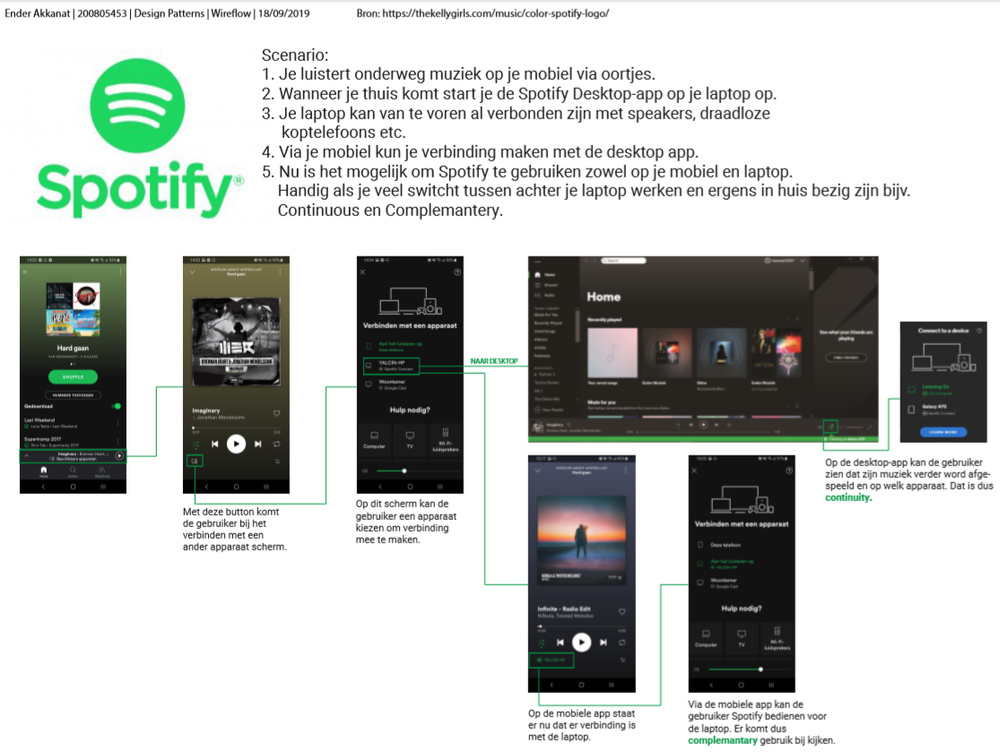

Wie ben ik?
Ender Akkanat
Leeftijd: 20 jaar
Opleiding: Communication Multi-Media Design.
Ender Akkanat
Leeftijd: 20 jaar
Opleiding: Communication Multi-Media Design.
Een leuke en leerzame stage voor 15 april t/m... Ik wil graag een stage waar ik veel kan leren over interacties in digitale producten en diensten. Ik wil graag leren over hoe goede interacties onderzocht, ontworpen, getest en uiteindelijk gemaakt worden. Wat ik graag wil is specialiseren richting de Interactie kant. Op dit moment ben ik een Jack of all Trades, master of none. Doormiddel van Stage lopen bij een tof bedrijf wil ik hier verandering in maken.
Op dit moment kan ik van alles wat. Ik kan interacties bedenken en prototypes maken met waarschijnlijk mijn favoriete tool genaamd Adobe XD. Ik kan werken met HTML en CSS om websites te maken met leuke effects of kleine animaties. Ook kan ik schermen ontwerpen met Adobe XD of Illustrator.
Opdracht: Voor Project Web was de opdracht om een Interactieve, Multi Device reisgids te ontwerpen. Uiteindelijk moest ik een prototype gemaakt hebben die meerdere keren geïtereerd was.Het was de bedoeling om een interactieve reisgids te maken voor een bepaalde doelgroep die op verschillende devices gebruikt kon worden. Het doel van het Project was om te leren feedback te verwerken en toe te passen in een verbeterde versie van mijn ontwerp.
Resultaat: Uiteindelijk heb ik een mooi prototype kunnen opleveren dat aan de eisen van de opdracht voldeed. Het was voor mij een flinke uitdaging om steeds nieuwe feedback te verwerken maar dit is toch gelukt. Ook heb ik flink meer skills geleerd met de tools waar ik mee gewerkt heb. Dit waren Adobe Illustrator en Adobe XD.
Meer over Project WebOpdracht:Voor het vak Design Patterns kreeg ik de opdracht om een interactie van een Multi-Device-Applicatie te onderzoeken. Dit houd in dat de applicatie op verschillende apparaten tegelijk of aanvullend gebruikt kan worden. De applicatie die ik heb gekozen was Spotify.
Resultaat: Ik heb een Wireflow gemaakt met de bijbehorende interacties. Hierdoor kon ik inzicht krijgen op hoe Spotify werkt op verschillende devices, wat je hier voor moet doen en tenslotte hoe deze verschillende devices elkaar aanvullen.
 Meer over Design Patterns.Opdracht: Voor dit Project moest ik een fysiek en digitaal interactief concept te maken voor de NS. Het concept moest kinderen tussen de 5 en 6 jaar iets laten leren op een leuke manier. Het was mijn taak om te onderzoeken, te conceptualiseren en om een fysiek prototype te maken voor de NS om mijn concept uit te werken.
Resultaat: Uiteindelijk heb ik een concept bedacht waarbij kinderen in de treinen op een interactieve en speelse manier iets leren over bekende plekken in Nederland. Ik had een prototype gemaakt met een aantal plekken die leerzaam maar ook interessant genoeg zijn voor kinderen van 5-6 jaar. Het prototype heb ik getest bij kinderen van groep 3 en het verder verbeterd.
 Meer over NS geeft les.
Meer over NS geeft les.
Opdracht: Voor Informatie Architectuur moest ik voor een opdrachtgever een applicatie ontwerpen met schermen en interacties. De opdrachtgever was The Ninja Warrior Run organisatie. Ik kreeg een case met de punten die verwerkt moesten worden in de applicatie.
Resultaat: De applicatie moest werken voor drie verschillende groepen: